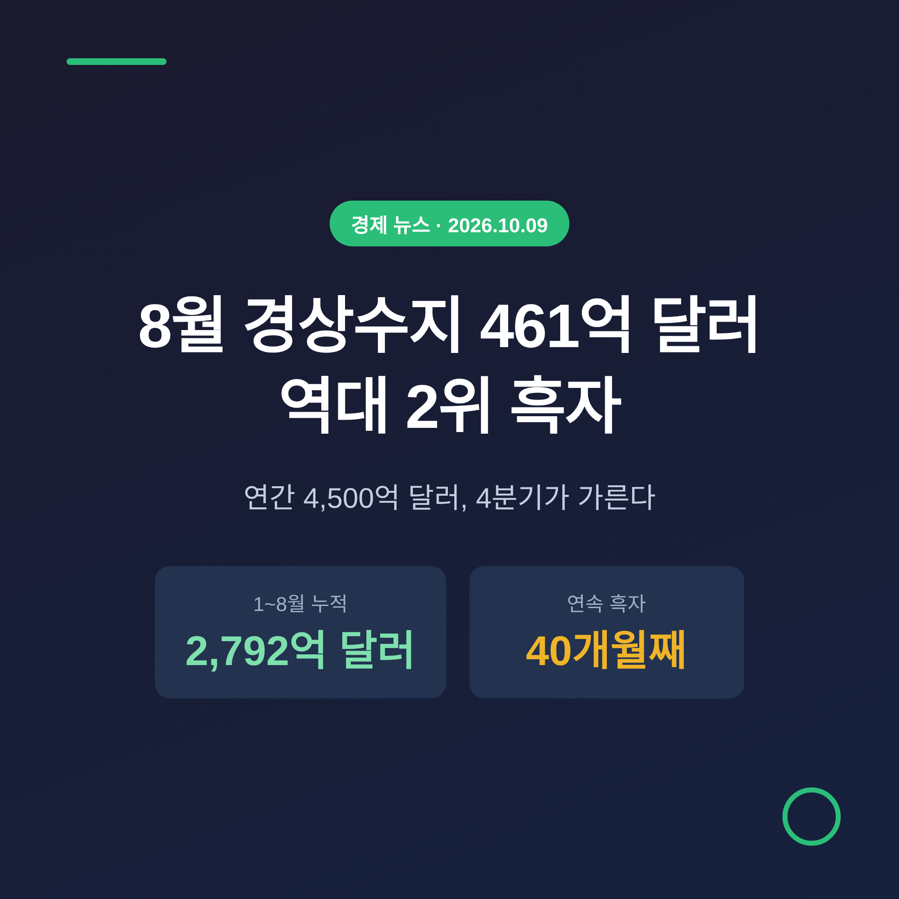
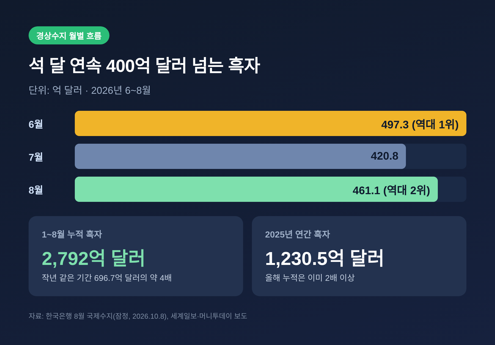
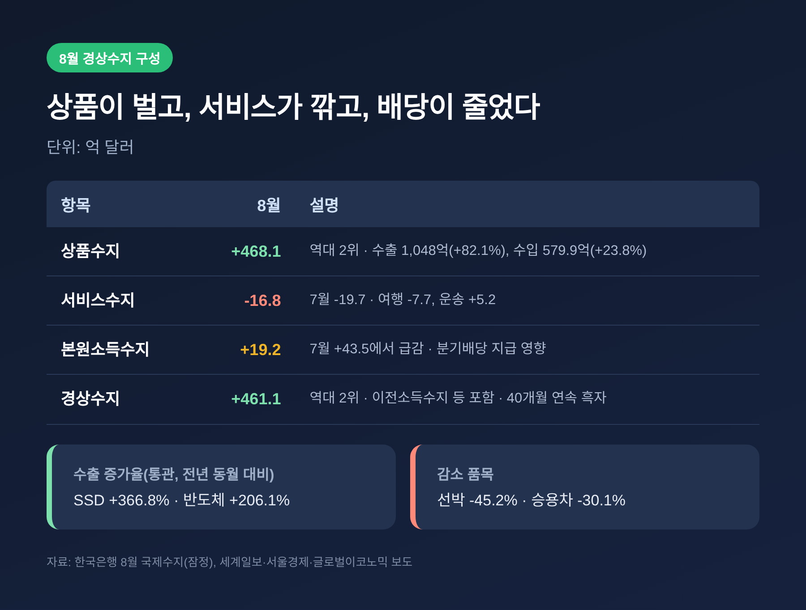
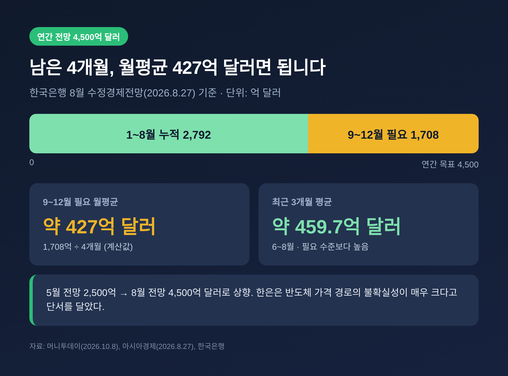
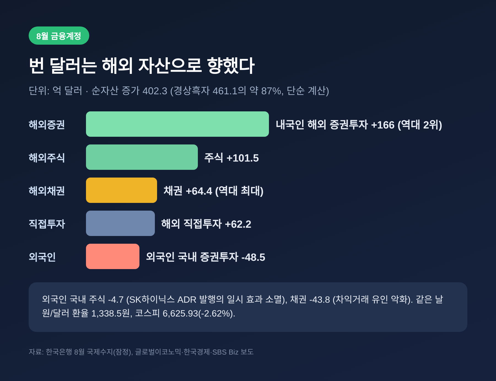
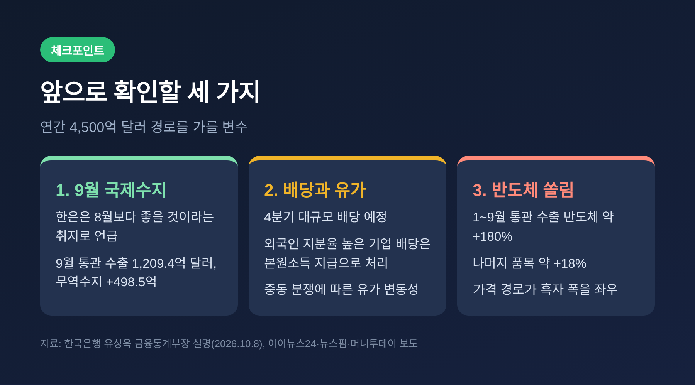

3줄 요약
오늘은 한국은행이 발표한 8월 경상수지를 정리해 보려 합니다. 숫자가 역대급이라는 점은 분명합니다. 그 숫자가 어디서 나왔고, 연말까지 이어질 수 있는지를 차례로 살펴보겠습니다.
한국은행은 10월 8일 '2026년 8월 국제수지(잠정)'를 공개했습니다.
8월 경상수지는 461억 1,000만 달러 흑자입니다. 원화로 약 61조 7,000억 원입니다.
월간 기록으로는 6월의 497억 3,000만 달러에 이은 역대 2위입니다. 7월은 420억 8,000만 달러였습니다. 6월부터 석 달 내리 400억 달러를 웃돌았고, 흑자 행진은 40개월째 이어졌습니다.
1~8월 누적은 2,792억 달러입니다. 작년 같은 기간 696억 7,000만 달러의 약 4배입니다. 2025년 한 해 흑자가 1,230억 5,000만 달러였으니, 이미 두 배를 훌쩍 넘었습니다.

경상수지의 중심은 상품수지입니다. 8월 상품수지 흑자는 468억 1,000만 달러로 역대 2위였습니다.
수출은 1,048억 달러로 전년 동월보다 82.1% 늘었고, 석 달째 1,000억 달러를 넘었습니다. 수입은 579억 9,000만 달러로 23.8% 증가했습니다.
통관 기준으로 보면 쏠림이 뚜렷합니다. 반도체 수출은 206.1%, 컴퓨터 주변기기(SSD)는 366.8% 늘었습니다. 반면 승용차는 30.1%, 선박은 45.2% 줄었습니다. 한국은행 유성욱 금융통계부장은 반도체 가격이 1년 전보다 100% 이상 올랐고, 8월 물량도 10% 가까이 늘었다고 설명했습니다.
수입 쪽에도 반도체가 있습니다. 반도체 제조장비 수입이 96.5%, 반도체 수입이 70.6% 늘었습니다. 설비투자도 함께 커지고 있다는 뜻입니다.
상품에서 번 돈이 전부 남지는 않습니다. 서비스수지는 16억 8,000만 달러 적자였습니다. 휴가철 여행수지 적자가 7억 7,000만 달러로 커졌고, 운송수지는 수출운임 상승으로 5억 2,000만 달러 흑자를 냈습니다. 본원소득수지는 19억 2,000만 달러 흑자로, 7월의 43억 5,000만 달러에서 크게 줄었습니다. 분기 배당 지급이 몰린 계절 요인입니다.

한국은행은 8월 27일 수정경제전망에서 올해 경상수지를 4,500억 달러로 제시했습니다. 5월에는 2,500억 달러였습니다. 석 달 만에 큰 폭으로 올린 것입니다. 근거는 글로벌 AI 투자에 따른 반도체 수요와 공급 제약에 따른 가격 상승이었습니다. 다만 한은은 반도체 가격의 향후 경로에 불확실성이 매우 크다고 단서를 달았습니다.
이번 발표에서 유 부장은 "지금 전망하는 수준 정도는 달성할 수 있을 것으로 보인다"고 말했습니다. 9월 무역수지가 예상보다 크게 흑자를 냈고, 연말로 갈수록 수출이 몰리는 효과가 있다는 이유입니다. 9월 통관 수출은 1,209억 4,000만 달러로 역대 최대였습니다.
남은 계산은 단순합니다. 연간 4,500억 달러에서 누적 2,792억 달러를 빼면 9~12월에 1,708억 달러가 필요합니다. 월평균 약 427억 달러입니다. 최근 석 달 평균 약 459억 7,000만 달러보다 낮은 수준이어서, 지금 속도를 유지하면 무리한 목표는 아닌 셈입니다.

한은이 꼽은 위험은 두 가지입니다.
첫째는 배당입니다. 4분기에는 기업들의 대규모 배당이 예정되어 있습니다. 외국인 지분율이 높은 기업의 배당은 본원소득수지의 '지급'으로 잡혀 흑자를 깎습니다. 8월에 배당소득수지 흑자가 38억 3,000만 달러에서 11억 8,000만 달러로 줄어든 것이 작은 예고편입니다.
둘째는 유가입니다. 중동 분쟁으로 유가 변동성이 커졌습니다. 8월 원유 수입은 이미 21.1% 늘었습니다.
여기에 반도체가 있습니다. 유 부장도 석 달 연속 수출 1,000억 달러 돌파는 반도체가 이끌었고, 앞으로의 추세 역시 반도체에 달렸다고 했습니다. 가격이 꺾이면 흑자 폭도 함께 흔들릴 수 있다는 이야기입니다.
흑자가 크면 원화가 강해질 것 같지만, 실제로는 그렇지 않았던 때가 있었습니다.
7월 초만 해도 1~5월 누적 흑자가 1,412억 8,000만 달러로 작년 연간 흑자를 넘어섰는데, 원/달러 환율은 36거래일 연속 1,500원대에서 마감했습니다. 외환위기 이후 가장 긴 기간이었습니다. 당시 5월 외국인의 국내 주식투자는 310억 5,000만 달러 줄어 역대 최대 감소폭이었습니다. 한은은 그때 "환율은 경상수지뿐만 아니라 외국인 증권투자 등 여러 요인의 영향을 받는다"고 설명했습니다.
지금은 다릅니다. 10월 8일 원/달러 환율은 1,338.5원에 마감했습니다. 1,500원대에서 많이 내려왔습니다. 다만 같은 날 코스피는 2.62% 내린 6,625.93으로 마감했고, 외국인과 기관이 함께 팔았습니다.
8월 금융계정을 보면 돈의 이동이 보입니다. 순자산은 402억 3,000만 달러 늘었습니다. 내국인의 해외 증권투자는 166억 달러 늘어 역대 2위였고, 해외 채권 투자 64억 4,000만 달러는 역대 최대였습니다. 외국인의 국내 증권투자는 48억 5,000만 달러 줄었습니다.
경상흑자 461억 1,000만 달러 가운데 약 87%에 해당하는 금액이 금융계정 순자산 증가로 이어진 셈입니다. 이 비율은 두 숫자를 나눈 단순 계산이어서, 정확한 자금 흐름을 그대로 뜻하지는 않습니다. 그래도 번 달러가 국내에 머무르지 않고 해외 자산으로 향한다는 방향은 읽힙니다.

예전에는 경상수지 흑자가 곧 외환시장의 안정이라는 공식이 비교적 잘 통했습니다. 지금은 흑자의 크기와 환율, 증시 흐름이 따로 움직이는 장면이 자주 나타납니다.
앞으로 확인할 지점은 세 가지입니다.

흑자가 많다는 사실은 외부 충격에 맞설 체력이 늘었다는 뜻이기도 합니다. 다만 그 체력이 한 품목에 크게 기대고 있다는 점은 한계입니다. 이 글은 공개된 통계를 정리한 해설이며, 투자 권유가 아닙니다. 투자 판단과 그 책임은 본인에게 있습니다.
정리하면 이렇습니다.
8월 경상수지 461억 1,000만 달러는 반도체가 만든 기록이고, 연말까지의 열쇠는 배당과 유가, 그리고 반도체 가격이 쥐고 있습니다.
"흑자의 크기보다 그 흑자가 어디서 오고 어디로 가는지를 봐야 합니다."
연간 4,500억 달러의 성적표가 나오면, 올해의 수치가 일시적 호황이었는지 새 기준선이었는지도 조금 더 선명해질 것입니다.
참고 자료: 한국은행 8월 국제수지(잠정) 발표(2026.10.8) 및 세계일보, 서울신문, 뉴스핌, 서울경제, 한국경제, 머니투데이, 글로벌이코노믹, 아이뉴스24, 금융소비자뉴스, 파이낸셜뉴스, SBS Biz, 아시아경제 보도(2026.7.8~10.9)